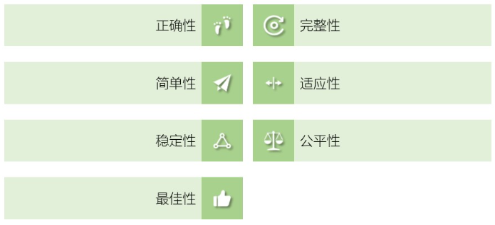
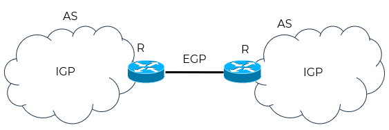
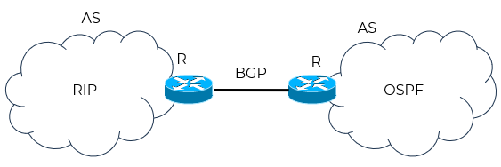
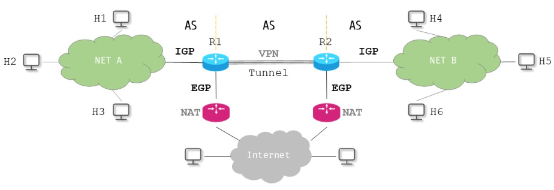

路由选择协议
@Protocols- 关注：路由表是怎么来的？
- 理想的路由算法
- 考虑到互联网的规模和用户的私密，采用分层次的路由选择协议
- 将互联网划分为若干自治系统 AS - Autonomous System
- 每个AS采用单一技术管理网络

逻辑思维 Logical Thinking
设计思维 Design Thinking
知其然，知其所以然
创其所未然


路由选择协议分类 Classification
- 内部网关协议 Interior Gateway Protocol
- 在一个自治系统AS内部使用的路由选择协议，与互联网中其它自治系统使用什么路由选择协议无关
- 相应的路由选择称为域内路由-intradomain routing
- 内部网关协议主要有：
路由信息协议 RIP - Routing Information Protocol
开放最短路径优先 OSPF - Open Shortcut Path First
- 外部网关协议 External Gateway Protocol
- 若源主机和目的主机在不同的自治系统AS，不同AS之间的路由选择就必须使用外部网关协议
- 相应的路由选择称为域间路由-interdomain routing
- 不同的AS允许使用相同的内部网关协议
- 外部网关协议主要有：
边界网关协议 BGP - Border Gateway Protocol
部分资料把EGP和BGP当做2个独立的协议，称GBP已经取代EGP

